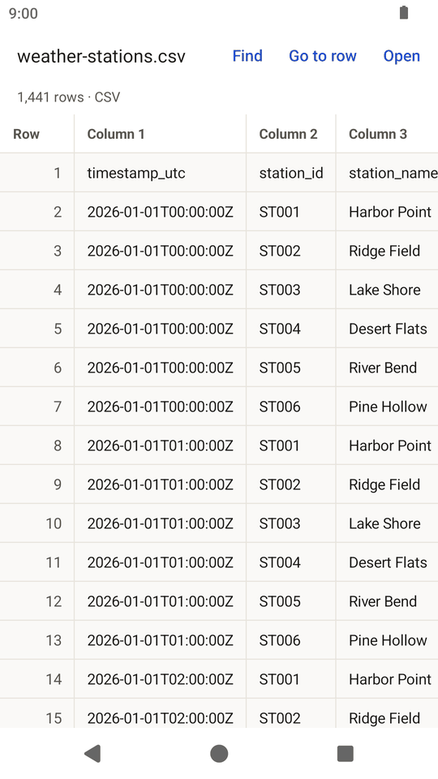
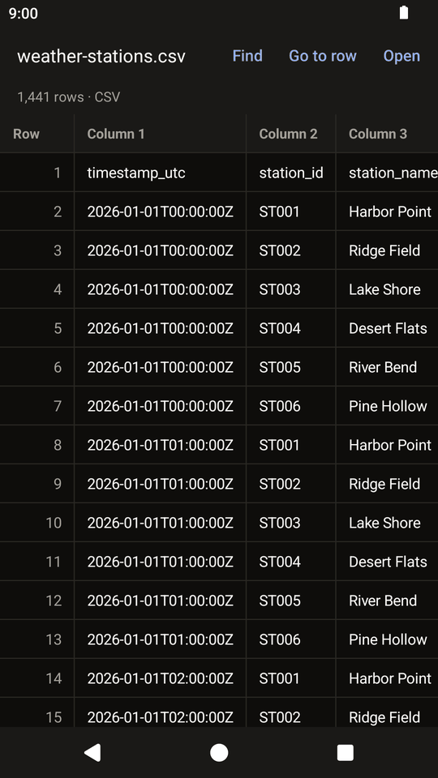

Android closed test
LeanRows for Android: open big CSV and log files on your phone.
LeanRows opens CSV, TSV, JSON Lines and log files, and Excel
.xlsx workbooks, for looking, not editing. It reads the
file once to find where each row starts, then reads only the rows on
screen, so the memory it needs depends on the screen, not on the size
of the file. It never changes the file.
LeanRows for Android is in a closed test on Google Play before its public release. Google needs testers who keep the app installed for 14 days. Use the Google account you have on your phone.
How to join
Join the test in three steps.
-
Join the testers group
Join the Lean Apps testers group on Google Groups with the Google account you use on your phone. The same group is used for the LeanDoc, LeanMark and LeanRows tests.
-
Become a tester
Then, on your phone, open the LeanRows tester page and tap Become a tester.
-
Install from Google Play
Install LeanRows from Google Play and keep it installed for 14 days. Google counts the testers who stay in the test for 14 days in a row before it lets the app go public.
If the tester page says the app is not available yet, Google is still reviewing the test; try again a day later.
Screenshots
LeanRows on a phone.


What it does
A viewer for CSV, log and Excel files, nothing more.
Open a file from your file manager, from a mail attachment or from your browser's downloads with Open with, share a file to LeanRows, or use the Open button inside the app.
Features
- Rows appear while the rest of the file is still being counted
- Find text anywhere in the file, with an option to match case
- Go to a row by number, and a fast scroller for long files
- Tap a cell to see all of it and copy it
- Quoted fields with commas and line breaks, as in spreadsheet exports
- Excel workbooks one sheet at a time, with a Sheet button for the others
Limits
- Excel shows what the file stores: formulas are not calculated, and 12.5% shows as 0.125. Older
.xls,.xlsmand.xlsbfiles are not supported. - Columns are named Column 1, Column 2 and so on (A, B, C for Excel); the first row is shown as a row, not used as headers.
- A row shows at most 64 columns, and a cell at most 1,024 characters, as in the desktop version.
- Text must be UTF-8. Other bytes are shown as
\xNN.
Privacy
No internet permission. No data collected.
LeanRows has no internet permission, so it cannot send or receive anything over the network. It asks for no permissions at all, and it has no analytics, no ads and no accounts. It reads the file you open and never changes it. When you open a workbook, or when an app shares a file only as a stream, LeanRows keeps a working copy in its own private cache folder while the file is open.
Read the privacy policy for the Lean Apps on Android. This page sets no cookies and loads no scripts.
Feedback
Tell me what does not work.
The app collects nothing, so reports have to come from you. Open an issue on GitHub with your Android version and phone model, or send private feedback from the tester page on Google Play. Never attach a private file: make a small file that shows the problem.
Things to try during the 14 days
- Open a CSV file from the Files app, from a mail attachment and from your browser's downloads, and use the Open button in the app.
- Open a large file (100,000 rows or more) and scroll to the end with the fast scroller.
- Use Find and Go to row, tap a cell and copy it, drag the table sideways, rotate the phone, and switch between light and dark.
Each Android release on GitHub also has the APK attached, for phones without Google Play.
Also from Lean Apps
LeanRows for Windows.
The desktop app for Windows splits rows and fields by the same rules. Visit the LeanRows desktop site. The Lean Apps page lists all three apps.
-
LeanRows for Windows
The desktop CSV and log file viewer.
-
LeanDoc for Android
A Word document viewer, also in a closed test.
-
LeanMark for Android
A Markdown viewer, also in a closed test.